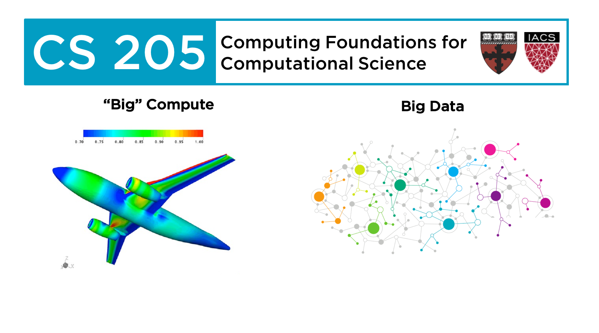
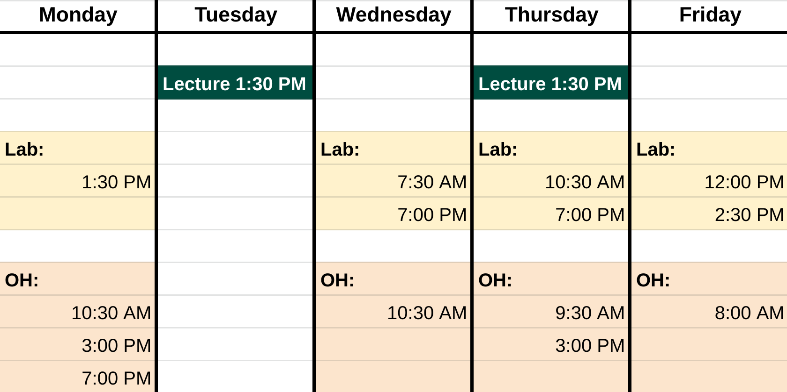

CS205: Computing Foundations for Computational Science

Computational science has become a third partner, together with theory and experimentation, in advancing scientific knowledge and practice, and an essential tool for product and process development and manufacturing in industry. Big data science adds the 'fourth pillar' to scientific advancements, providing the methods and algorithms to extract knowledge or insights from data.
The course is a journey into the foundations of Parallel Computing at the intersection of large-scale computational science and big data analytics. Many science communities are combining high performance computing and high-end data analysis platforms and methods in workflows that orchestrate large-scale simulations or incorporate them into the stages of large-scale analysis pipelines for data generated by simulations, experiments, or observations.
This is an applications course highlighting the use of modern computing platforms in solving computational and data science problems, enabling simulation, modeling and real-time analysis of complex natural and social phenomena at unprecedented scales. The class emphasizes on making effective use of the diverse landscape of programming models, platforms, open-source tools, computing architectures and cloud services for high performance computing and high-end data analytics.
Staff - Spring 2021
Instructor:
-
David Sondak
-
Email: dsondak@seas.harvard.edu
-
Office Hour: Thursday 3:00 PM - 4:00 PM, Boston Time
Teaching Fellows:
| Hayoun Oh | Oluwatosin Alliyu | Simon Warchol | Haipeng Lin | George Touloumes | |
|---|---|---|---|---|---|
| hayounoh@g.harvard.edu | oalliyu@mde.harvard.edu | simonwarchol@g.harvard.edu | hplin@seas.harvard.edu | touloumes@g.harvard.edu | |
| Office Hours | Monday 7:00 PM - 9:00 PM |
Friday 8:00 AM - 9:00 AM |
Thursday 9:30 AM - 10:30 AM |
Monday 10:30 AM - 11:30 AM |
Monday 3:00 PM - 4:00 PM Wednesday 10:30 AM - 11:30 AM |
| Lab | Thursday 7:00 PM - 8:15 PM Friday 2:30 PM - 3:45 PM |
Wednesday 7:30 AM - 8:45 AM |
Friday 12:00 PM - 1:15 PM |
Wednesday 7:00 PM - 8:15 PM |
Monday 1:30 PM - 2:45 PM Thursday 10:30 AM - 11:45 AM |
Lecture and Lab Locations
All lectures and labs will be held through zoom, which can be accessed through the Zoom tab on Canvas.
Office Hour Location
Office hours will be held on GatherTown. The link is available on the Canvas main page along with the access code.
Time
Lectures: Tuesday 1:30PM-2:45PM; Thursday 1:30PM-2:45PM
Labs: Attendance mandatory, Wednesday through Friday

Acknowledgements
The course includes several guest lectures by the FAS Divison of Science, Research Computing Group at Harvard University about how to use the Cannon cluster with GPUs, OpenMP, and MPI.